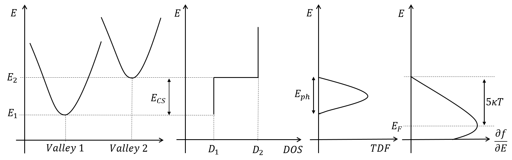
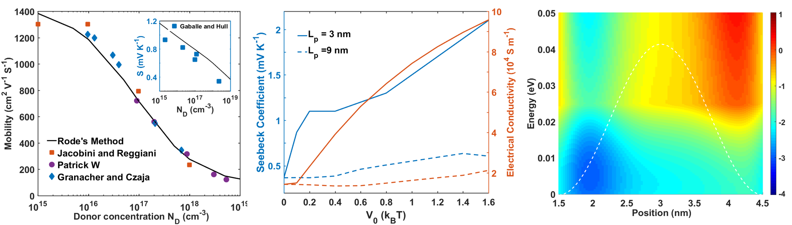
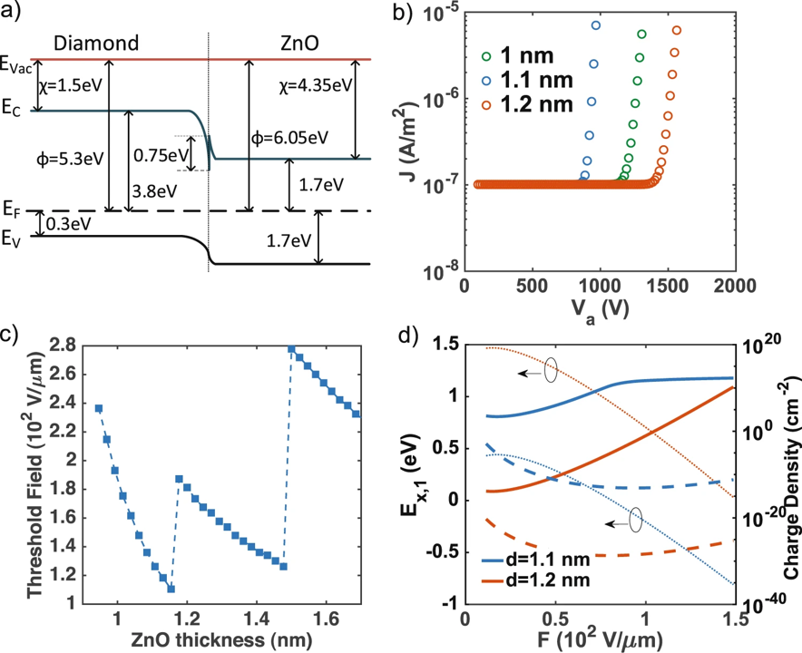
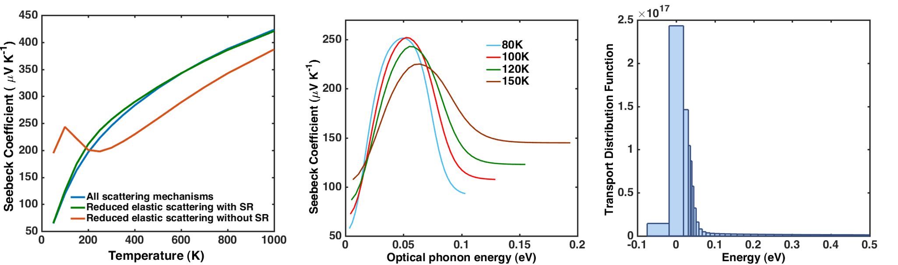

High throughput 2D material discovery for thermoelectric applications: predicting power factor using physics aware models.*
Sophisticated material descriptors or parameters have been proposed to combine different material properties that can be used to evaluate the material capabilities like thermoelectric efficiency (ZT). Using high performance DFT packages reseachers created material databases with electronic and vibrational properties. With the advent of new 2D materials like single-layer transition metal dichalcogenides (TMDCs), there is a need to explore the possibility of their use in future thermoelectrics. This study calculates the power factor of 2D materials using the existing material databases by accurately modeling the carrier transport.
Phonon drag contribution towards TE performance in MoS2: Using full phonon distribution.*
The additional contribution towards Seebeck coefficient at low temperatures from phonon drag has interesting applications like high precision thermometers. Here we study the contribution of different phonon modes towards the drag by calculating the full phonon distribution by including the contribution from normal processes. This full phonon distribution helps to calculate the electron scattering matrix elements that account for the momentum transfer from phonons to electrons. This gives insight into selecting appropriate semiconducting materials for future thermoelectric devices.
Anisotropy in power factor of 2D materials with periodic potential barriers using Wigner-Rode formalism.

The main aim of the study is to understand the evaluate the anisotrophy in power factor that arises from carriers being transported by two different processes.
Energy filtering, where carriers try overcome the potential barrier to transport charge and confinement, where carriers are restricted to few allowable energy states.
In both of these processes, the increase in average energy improves the power factor and this study evaluates their respective contribution in a 2D material like MoS2.
[Journal paper]
Towards a higher power factor in 2D materials: Role of inelastic scattering mechanisms.
 Extending our novel controlled-scattering approach to intrinsic 2D materials (like TMDC’s) and study the thermoelectric properties.
This study aims to determine the optimal material parameters, including optical and zone-edge phonon energies, effective mass, and carrier concentrations that optimize the thermoelectric power factor in those materials.
[Journal paper]
Thermoelectric properties of periodic quantum structures in the Wigner-Rode formalism.
A comprehensive transport model is implemented using the Wigner–Rode formalism to study in tunneling in semiconducting nanostructures.
Using full electronic bandstructure and all the relevant scattering mechanisms, both energy relaxation and quantum effects from periodic potential barriers are simulated.
Our simulations study the impact of barrier shape on TE performance and find that tall, sharp barriers with small period lengths lead to the largest increase in both Seebeck coefficient and conductivity, thus boosting power factor and TE efficiency.
[Journal paper]
Fowler-Nordheim emission in surface modified free-standing diamond nanomembranes.
This project studies the Fowler-Nordheim emission from bulk emitters like free-standing diamond membranes covered with a-few-nm thick wide-gap semiconductor for a future mass spectrometry applications.
The thin film of ZnO deposited under applied electric field creates a triangular barrier at the diamond-semiconductor interface that boosts the field emission from the surface.
[Journal paper]
Low-temperature enhancement of the thermoelectric Seebeck coefficient in gated 2D semiconductor nanomembranes.
The effect of confinement is studied by simulating a confined 3D material to mimic a 2D material with a gate and utilizing the sharp features in density of states due to the reduced dimensionality.
In addition to that a novel controlled scattering approach is formulated to enhance the device thermoelectric properties by shifting the onset of scattering with respect to the density of states, thereby creating a window shape for transport integral.
Along with the controlled scattering an effective utilization of Fermi window can provide a considerable enhancement in thermoelectric performance.
The conclusions from these simulations help in selection of materials to achieve enhanced thermoelectric performance.
[Journal paper]
*Ongoing project